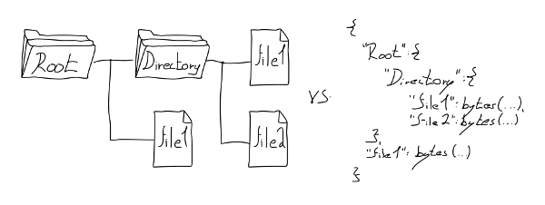
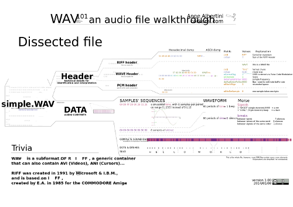

Před nějakou dobou se mi dostalo do rukou zamyšlení, zdali je vlastně zapotřebí operační systém, či ne. Sám na toto téma provádím něco jako „výzkum“ už přibližně dva roky. Rozhodl jsem se tedy, že bych mohl sepsat nosné myšlenky spolu s odkazy na některé relevantní zdroje informací.
Pozor, tento zápisek obsahuje množství textu. Pokud vás text uráží, zvažte, zda se vůbec chcete pustit do diskuze.
Předně bych rád deklaroval, že tu mluvím sám o sobě. Když budu psát, že „je něco zapotřebí“, „možné“, nebo „schůdné“, myslím tím „zapotřebí pro mě“, „možné pro mě“, nebo „schůdné pro mě“.
Zažil jsem až příliš diskuzí na internetu, které byly způsobeny čtením mezi řádky a vztahováním čtenářovo názorů a předsudků na osobu autora. Vím, že tohle upozornění pravděpodobně nepomůže, ale zkuste se nad prezentovanými myšlenkami zamyslet s otevřenou myslí.
Pokud vám některé moje nápady přijdou kontroverzní, nesmyslné, či pokud budete mít dokonce pocit, že Vás pobuřují svou donebevolající blbostí - uklidněte se. Vzpomeňte si na výše uvedenou deklaraci. Uvědomte si, že vůbec nemluvím o vás, nemám potřebu a chuť vám něco vnucovat, měnit vám workflow, nebo pomlouvat Váš systém. Berte to jako mojí podivnost, jako možný směr, který to chce vyzkoušet a nevztahujte to o čem tu mluvím na sebe.
Jestliže v článku i poté uvidíte nedostatky a napadne Vás něco konstruktivního k věci, napište to do diskuze. Zkusme to tu pro jednou udržet v konstruktivní rovině.
Neušlo mé pozornosti, že diskuze pod většinou článků na abclinuxu trvá maximálně několik týdnů, v řídkých případech jednotky měsíců.
Jsem si vědom, že abclinuxu zobrazuje u starších článků upozornění na dlouhou dobu od vydání článku a nepovažuji to za správný nápad. Pokud máte co konstruktivního říct a přečtete si tenhle článek třeba desetiletí po jeho vydání, já jako autor stále stojím o váš názor.
Pokud ho nechcete, či nemůžete vložit do diskuze, pošlete mi ho emailem na bystrousak[]kitakitsune.org, s nějakým smysluplným předmětem. Možná Vás to překvapí, ale napsal jsem docela hodně článků s podobným upozorněním a dodneška diskutuji s lidmi co je četli, i když je to třeba 7 let od vydání. O váš názor stojím.
Osobně ovšem preferuji diskuzi zde pod článkem, neboť z ní mohou těžit i ostatní. Taky to trochu zabraňuje neustálému opakování otázek.
V posledních letech jsem pracoval pro několik firem vytvářejících software. V některých případech jsem se zapojil do již existujících týmů, v ostatních jsem začínal spolu s několika dalšími programátory „na zelené louce“. Často jsem se přímo podílel na návrhu architektury, pokud jsem jí rovnou nevymýšlel sám.
Pracuji jako „backendový programátor“. Mým popisem práce je typicky vytvářet systémy, které načítají, zpracovávají a ukládají různá data, parsují všemožné formáty, volají různé programy, či interagují s ostatními systémy a zařízeními.
V Národní knihovně jsem v tříčlenném týmu dělal na systému pro zpracování elektronických publikací. Vytvořil jsem tam prakticky veškerý backendový kód, od ukládání dat, po komunikaci s ostatními systémy, mezi které patří například Aleph, Kramerius, nebo LTP (dlouhodobý archiv digitálních dat). Pro ukládání byl použit linuxový filesystém ext4 na CentOSu a objektová databáze ZODB vynucená Plonem, ve kterém byla frontendová část. Pro komunikaci pak všechno možné, od volání API přes REST, nahrávání XML souborů na FTP, balení věcí do ZIPu az po kopírování na sambu. Interní komponenty mezi sebou používaly RabbitMQ.
V jisté nejmenované společnosti jsem pracoval na systému k ochraně proti DDoS útokům. Kvůli NDA nemůžu rozebírat podrobnosti nad rámec popisu tehdejších pracovních inzerátů. Ty ukazují, že byl také použit linux, python, SQL i NoSQL databáze, spousta různých existujících opensource programů a na komunikaci RabbitMQ. Na velké části z toho komunikačního kódu jsem dělal přímo já.
Pro Nubium development, vytvářející asi nejznámější český filehostingový web ulož.to, jsem dělal na backendu. Zrefaktoroval jsem a částečně navrhl kusy software, které se starají o ukládání a redistribuci souborů napříč různými servery, ale i o zpracování uživatelských dat. Například ikonky, které se zobrazují u náhledů archivů a videí, jsou moje práce, kromě spousty dalších věcí, které nikde neuvidíte.
Pro pár dalších firem jsem dělal různé weby a RESTové služby. Momentálně dělám na systému pro rozpoznání a automatické vyhodnocování záběrů z kamer v různých tunelech.
Všude kde jsem dělal se používal linux, databáze, a většinou i nějaká forma message queue předávající strukturovaná data. Někdy šlo o SQL tabulky, jindy o JSON poslaný přes RabbitMQ.
V každé z jmenovaných firem jsem viděl ten samý vzor - nezávisle na sobě vytvořený, přibližně podobný kus software, který přirozeně vyplynul z několika požadavků:
Pokud programujete, pravděpodobně víte, kam tím mířím. Jestliže spousta programátorů vytváří nad danou knihovnou stále stejný vzor, nejedná se o chybu programátorů, ale o špatně navrženou knihovnu.
Postupně, jak jsem nad tím tak přemýšlel, jsem dospěl k názoru, že je špatně samotná architektura operačního systému. To co nám nabízí a co umožňuje nepovídá tomu co po něm chceme a co od něj očekáváme. Především z hlediska „programátorského uživatelského interface“, tedy toho, s čím jako programátor pracuji.
Když jsem byl mladší, měl jsem poměrně jasnou představu o tom, co je to operační systém: Windows přece. To je ta věc, co mají všichni na počítači, vlevo dole to má tlačítko start, a když nenaběhne a zobrazí se jen černá obrazovka, je zapotřebí napsat win.
Na střední škole mě naučili definici, podle které je operační systém „programové vybavení počítače zpřístupňující vstupně-výstupní zařízení“.
Později jsem zjistil, že operačních systémů existuje hodně a v podstatě všechny dělají to samé; vytvářejí ± jednotnou abstrakci nad hardwarem počítače, umožňují pouštět různé programy, nabízí více, či méně propracovaný filesystém, spravují paměť, řeší multitasking a uživatelská práva.
V dnešní době je operační systém pro většinu lidí to, čím pouští své prohlížeče, ve kterých koukají na youtuby a na facebooky a taky skrz to posílají emaily. Občas to umí pouštět hry a pracovat se vším možným, od CD-ROMky po klávesnici.
Pro pokročilé uživatele je to pak určitá forma databáze a API, která umožňuje spouštět jejich programy a také nabízí standardizovaný přístup ke konkrétním činnostem. Například výpis znaku, uložení souboru, navázání spojení po internetu a tak podobně.
Většinou máme tendenci vnímat operační systém jako něco neměnného, co si vybereme z relativně malé nabídky diktováné svatou trojicí (Windows, Mac, Linux), okolo které se zmateně krčí několik prakticky nepoužívaných (0.03% celkem) alternativ (*BSD, Plan9, BeOS, ..).
Z nějakého důvodu jsou všechny skutečně používané systémy až na výjimky hodně podobné. Rád bych se zamyslel, jestli je to skutečně žádaná vlastnost, nebo náhodný historický vývoj.
První počítače neměly operační systém a byly uživatelsky velmi nepříjemné. Daly se programovat pouze přímou změnou hardwarového propojení.
Pak přišly děrnoštítkové a děrnopáskové stroje. Na nich operátor nacvakal sérií přepínačů přímo do paměti binárně „zavaděč“, jenž mu umožnil načíst děrné štítky, či děrný pásek. Ten obsahoval sekvence instrukcí a data.
Systém pracoval v takzvaných dávkách. Programátor dodal médium s dávkou dat, operátor je načetl do počítače a spustil. Po dokončení běhu vrátil programátorovi výsledky, či chybovou hlášku, pokud došlo k chybě.
Jelikož se jednalo o hodně manuální činnosti, časem vznikly knihovny pomocných funkcí a různé užitečné nástroje. Například zavaděč, který se zavede automaticky po startu počítače a umožní načtení programátorova programu pouhým stisknutím patřičného tlačítka. Nebo subrutina, která při pádu programu vypíše obsah paměti. Těmto programům se říkalo monitory.
Protože tehdejší počítače byly velmi, velmi drahé, vznikl tlak na jejich použití vícero uživateli zároveň. S tím přišly první operační systémy, které sloučily funkcionalitu monitoru, přidaly podporu běhu vícero programů zároveň a také nabídly správu a paralelní přístup vícero uživatelů.
Stále komplikovanější hardware a komplexita jeho přímého ovládání způsobila narůstající tlak na univerzálnost kódu mezi různými stroji a jejich verzemi. Operační systémy začaly nabízet podporu typicky používaných zařízení. Nadále již nebylo třeba zadávat adresu paměti na disku, stačilo uložit data do pojmenovaného umístění, a později i do složek. Vznikly první souborové systémy. S podporou vícero uživatelů zároveň vyvstala také snaha oddělit jejich programy, aby si navzájem nemohly přepisovat a číst data. Také vznikly plánovače a virtuální paměť a multitasking.
Operační systémy se staly vrstvou, která stojí mezi uživatelem, jenž nadále nemusí být programátorem, a poskytuje mu standardní způsoby uložení dat, výpisu znaku na obrazovku, práci s klávesnicí, tisku na tiskárnu a spuštění jeho dávky / programu.
Později k tomu přibylo ještě grafické rozhraní a síťování. Osobní počítače nabídly plejádu zařízení, z nichž všechny musel operační systém umět používat a podporovat. Až na pár výjimek, kterým se budu věnovat dále, šlo o iterativní vývoj, který nepřinesl nic zásadně revolučního. Všechno se zlepšovalo, zefektivňovalo, samotné paradigma se však moc nezměnilo.
Mezi subsystémy, které naprosto nemůžu kritizovat je hardwarová podpora. Dnešním operačním systémům se daří podporovat skoro vše, co podporovat jde. Mám jisté výhrady ke způsobu podpory (nebyl by třeba dobrý nápad to standardizovat a psát ovladače v něčem portabilním napříč systémy?), těm se zde ale nebudu věnovat. Dále nemám žádných námitek proti systémům správy paměti a plánování procesů. Naopak. Připíjím na zdraví tvůrců, skvělá práce!
Nemám nejmenší problém s konceptem operačního systému jako hardwarové abstrakce. Naopak! Mám problém s konceptem OS jako uživatelského rozhraní. Tím nemyslím grafiku, ale zbytek všeho s čím interagujete, a co má nějaký tvar;
Schválně se zkuste zamyslet, co to vlastně je. Vyjde vám, že je to omezená hierarchická key-value databáze.
Omezená, protože omezuje nejen velikost a subset klíče, který je v lepším případě v UTF, ale i samotnou uloženou hodnotu na proud bajtů. To se zdá rozumné jen do chvíle, kdy si uvědomíte, že je to stromová databáze, která vám nedovoluje přímo ukládat strukturovaná data. Počet inodů (větví struktury) je navíc omezen na číslo, jenž se v horších případech pohybuje v řádu desítek až stovek tisíc, maximálně však pár milionů prvků v jednom adresáři.

Ve dvou z mých předchozích zaměsntáních jsme museli obcházet omezený počet inodů na složku retardací jako BalancedDiscStorage, či ukládáním souborů do tří podsložek složených z prvních tří písmen MD5 hashe souboru.
K tomu pro většinu operací chybí atomicita, a transakce nejsou podporovány vůbec. Paralelní zápisy a čtení fungují v různých operačních systémech různě, a ve skutečnosti není garantovano naprosto nic. Schválně si to srovnejte se světem databází, kde se ACID považuje za samozřejmost.
Filesystém je specificky omezená databáze. Každý koho znám, kdo se kdy pokusil filesystém použít pro cokoliv netriviálního, dřív nebo později tvrdě narazil. Ať už je to programátor, který si řekne, že si ty data prostě a jednoduše bude ukládat do souborů, nebo uživatel, který se v bordelu na filesystému nemůže vyznat a musí používat různé divné vyhledávání a indexování. Výkřikem techniky je, když dokáže poznat, že má poškozená data a dopočítat je zpětně ze samo-opravných kódů, pokud máte disky v RAIDu.
Samozřejmě chápu, že pointou je něco jiného. Řeší se tu sektory na disku a žurnálování, plotny a oddíly a RAIDy a celé je to super pokrok oproti původním primitivním systémům ukládání dat. Ale — není to náhodou pokrok špatným směrem?
Původní filesystémy byly metafora. Metafora pro ukládání souborů do složek, tak jako se strkají papíry do šanonů a šuplíků. Kromě mnoha technických omezení, daných stavem tehdejší výpočetní techniky, trpěly a trpí i omezením z podstaty této metafory. Přemýšlím, jestli by jsme si místo otázky „jak trochu vylepšit padesát let starou metaforu“ (třeba pomocí tagů) neměli klást spíš otázku „je to vážně ta správná metafora pro ukládání dat?“
Čistě fyzicky, programy jako takové nejsou nic jiného, než jen sekvence uložených bajtů. V podstatě ani pro operační systém nemůžou být nic jiného, neboť souborová databáze operačního systému s ničím jiným pracovat ani neumí.
Programy se prvně napíšou ve zdrojovém kódu příslušného jazyka, který se potom zkompiluje a slinkuje do jednoho bloku. Ten je následně vyděrován na děrné štítky (binární data) a zastrčen do patřičné krabice (souboru) ve správné sekci kartotéky (filesystému).
Když chce uživatel program pustit, napíše jeho jméno na příkazovém řádku, nebo někde klepne na ikonu. Poskládané děrné štítky jsou následně vyndány z kartotéky a nacpány do paměti, která se pro program tváří, jako kdyby byl v celém operačním systému sám. Kód je poté prováděn od počátečních děrných štítků k těm koncovým, s tím že program může podmíněně přeskočit na konkrétní děrný štítek v krabici, která ho tvoří.
Programy taky můžou číst parametry příkazového řádku, používat sdílené knihovny, volat API operačního systému, pracovat s filesystémem, posílat (číselné) signály různým jiným programům, reagovat na ně, vracet návratové hodnoty, nebo otevírat sockety.
Co je na tom špatně?
Nechci říct, že je koncept špatný jako takový. ALE. Opět je to stejná stará metafora, iterativním vývojem posunutá o pár kroků dál. Všechno mi přijde hrozně nízkoúrovňové. Celý ten systém se za posledních 40 let změnil jen minimálně a nemůžu se zbavit myšlenky, že než že by jsme dorazili k naprosté dokonalosti, spíš jsme někde uvázli v zákrutě lokálního maxima.
Lispovské stroje, Smalltalkovské a Selfové prostředí mě naučily, že se to dá dělat i jinak. Že programy nutně nemusí být kolekce bajtů, ale můžou to být malé samostatné objekty, které jsou (metaforou posílání zpráv) zavolatelné z ostatních částí systému, a které se dynamicky kompilují podle potřeby.
Znáte takovou tu unixovou filosofii, že je dobré používat malé programy, které dělají jednu věc, na tu se zaměřují a dělají jí dobře? Proč tu myšlenku nedotáhnout do konce a neudělat malé programy z každé funkce a metody vašeho programu? Ta by naoplátku mohla komunikovat s metodami a funkcemi ostatních programů.
Ve Smalltalku to tak funguje, dokonce není problém to verzovat, specifikovat závislosti, mít nad tím package manager, ošetření chyb, nápovědu a kdo ví co dalšího. Vážně by to nešlo dělat s programy obecně?
A jsme zase u těch binárních dat. Na první pohled geniální myšlenka, protože nic nemůže být víc univerzální. Na další pohled už tak ne.
V čem je problém?
Prakticky všechna data mají svou strukturu. Kdykoliv, kdy programátoři v programovacím jazyku pracují s daty, a nejedná se jen o jejich přesunutí, tak se jim snaží dát strukturu. Namapují je na různé struct konstrukty. Vytvoří z nich strom objektů. I u streamovaných věcí, jako je třeba záznam zvuku ve formátu WAV, se iteruje skrz jednotlivé chunky.

(Struktura WAV souboru. Zdroj: https://github.com/corkami/pics/.)
Proč tedy proboha každý program vezme data, dá jim strukturu, něco nad ní udělá a tu strukturu zahodí a zkolabuje zpět na nestrukturovaná, surová binární data?
Současná počítačová kultura je posedlá parsery a externími popisy dat, jenž by však mohly nést strukturu samy o sobě. Každý den jsou nesmírná kvanta výpočetních cyklů zcela nesmyslně plýtvána na konverzi surových bajtů na struktury a zase zpět. A každý program to dělá jinak, dokonce i v různých verzích. Nemalá část mé práce jako programátora je jen o parsování a převodech dat, jenž kdyby měla strukturu, tak by byla upravitelná jednoduchou transformací. Tady vem kus stromu a přesuň ho sem. K téhle části grafu přidej tohle, jinde něco uber.
Současná situace je analogická k situaci, kde kdybych posílal poštou hrad z lega, tak bych ho rozložil na jednotlivé kostky a k balíku přibalil referenci na návod, jak si hrad složit. Příjemce by si pak návod musel někde sehnat a hrad pracně skládat. Absurdita je zřejmější, když si uvědomíme, že se to netýká jen kostek lega, ale úplně všeho. I kdybych chtěl někomu podat sklenici, tak bych jí podal jako hrst písku a příjemce by si musel sklenici vyrobit sám. Je mi jasné, že nakonci se vždy musí posílat bajty, stejně jako se musí posílat kostky lega. Ale proč je neposlat už složené?
Zreviewovat jak to zapadáNejde jen o nesmyslnost toho všeho. Jde o to, že zároveň s tím je to i horší. Horší pro uživatele, a horší pro programátory. Data se kterými pracujete by mohla být sebe-popisná, ale nejsou. Jednotlivé položky by mohly obsahovat datové typy, ale i dokumentaci. A nemají. Proč? Protože je v módě mít zvlášť hromadu binárních dat, a zvlášť jejich externí popis. Ale proč? Vážně to tak chceme, vážně to má nějaké výhody?
V minulém desetiletí bylo možné vidět masivní nárůst používání formátů jako XML, JSON a YAML. Určitě lepší než drátem do oka, ale to stále není to o čem tu mluvím. Nejde mi o konkrétní formát, jde mi o strukturu samotnou. Proč nemít strukturovaně všechna data?
Nemluvím tady o parsování XML parserem, mluvím tu o přímém načtení do paměti, ve stylu message packu, SBE, nebo FlatBuffers, či Cap'n Proto. Bez toho aniž by bylo třeba vyhodnocovat text a řešit escape sekvence a formát unicode. O tom že na strukturovaná data o Frantovi Putšálkovi v kolekci lidí přistoupím pomocí people[0].name, místo toho abych v jednom formátu dělal doc.getElementByTagName("person")[0].name.value a v druhém doc["people"][0]["name"]. O tom že si můžu k atributu přečíst nápovědu pouhým help(people), místo abych hledal dokumentaci.
Mluvím tu o tom že se neparsuji s WAVem, ale prostě iteruji přes jednotlivé chunky, které tam jsou. O tom že data popisují sebe sama přímo svou strukturou, ne externím popisem. Mluvím o přímé serializaci objektů, o jednotném systému podporovaném všemi jazyky, i když nemají objekty.
Vážně by to bylo tak nemožné? Proč?
Všímáte si toho vzoru v mé kritice, hněvu a vášni? Je jím téma neuvědomělé struktury.
Souborové systémy nevnímáme jako databáze. Nedochází nám, že jejich struktura jsou hierarchická key-value data. Programy bereme jako binární bloby, místo klubka propojených funkcí a struktur a objektů majících potřebu komunikovat se sebou, ale i s okolním světem. Data chápeme jako mrtvé série surových bajtů, místo stromových a grafových struktur.
Co dalšího má strukturu, o čem jsem zatím nepsal? Samozřejmě komunikace. S operačním systémem. S programy. Mezi programy.
Plan9 byl úžasným krokem tímhle směrem. Poté co jsem ho prozkoumal jsem však dospěl k názoru, že tvůrci sice měli obecné povědomí o tom co dělají, ale nedošlo jim to v celé úplnosti. Možná částečně proto, že byli stále hodně ovlivněni unixem a komunikací v proudech bajtů.
Na Plan9 je úžasné, jak můžete interagovat se systémem pomocí zápisu a čtení z různých speciálních souborů. Fantastické! Revoluční! Tak úžasné, že to linux převzal například v podobě /sys subsystému a FUSE.
Víte co tomu chybí? Reflexe a struktura. Pokud si nepřečtete manuál, tak naprosto netušíte co kam zapsat.
Zde je kód pro blikání diodou na raspberry pi:
echo 27 > /sys/class/gpio/export echo out > /sys/class/gpio/export/gpio27/direction echo 1 > /sys/class/gpio/export/gpio27/value
Jak jsou řešeny chyby? Co když do /sys/class/gpio/export/gpio27/value zapíšu string „vánočka“? Dostanu zpět error kód z echa? Nebo se v nějakém jiném souboru něco objeví? Jak jsou zvládány paralelní zápisy? A co čtení, kde je popsáno co můžu dostat za hodnoty, když do /sys/class/gpio/export/gpio27/direction zapíšu „in“ místo „out“?
Prostě jak si to který modul udělá, tak to bude. Datové typy se neřeší. Pojďme postavit komunikaci se systémem na databázi, která si neuvědomuje že je databáze!
Tohle je asi největší neuvědomělá snaha o zavedení čehosi jako objektů, jakou jsem kdy viděl. Ta struktura jsou objekty. Jen ten rozdíl mezi sys.class.gpio.diode a složkou na podobném umístění je že složka je nepopsaná key-value položka, podobně jako JSON, která nemá jasně dané properties, formát dat, nápovědu, nebo třeba formát a způsob vyvolávání výjimek.
Já chápu, proč vznikly. Vážně. Ve své době to bylo naprosto racionální a nebylo nic lepšího. Ale proč proboha používat nestrukturovaný formát přenosu binárních dat i dneska, když veškerá komunikace je strukturovaná, což platí i pro zdánlivé proudy bajtů, jako streamované audio.
Vemte si, jak to vypadá, když píšete IRC bota. Navážete spojení. Super. Samozřejmě použijete select, aby jste nevytěžovali procesor. Data čtete v blocích, například 4096 bajtů. V paměti je převádíte na stringy a hledáte v nich nové „\r\n“. Musíte bufferovat a zpracovávat řádky vždy až když dorazí celé. Pak parsujete textovou strukturu a skládáte z ní zprávy o jednom řádku. A různé zprávy mají různé formáty a je třeba je parsovat různě. Hrozná zábava s reimplementací specifikace po milionté jinak. Přitom zprávy by mohly mít strukturu samy o sobě, stejnou jako zbytek všeho ostatního.
Nebo třeba HTTP. To přece přenáší strukturovaná HTML data, ne? Máte jasně daný jazyk a jeho popis a způsob parsování. Super! Co víc si přát. Myslíte ale, že HTTP používá na úrovni přenosového protokolu jako datový formát (HT/X)ML? Ani náhodou, samozřejmě, že si specifikuje vlastní protokol, který vypadá úplně jinak (key-value data hlaviček a pak způsob posílání chunků dat).
Email? Ani mě nenechte začít na téma zkaženosti emailu, jeho protokolu a formátu, kde se nejasně definovaná struktura v asi pěti standardech mísí mezi sebou a každý výrobce si to implementuje po svém. Pokud jste někdy zkoušeli zpracovávat emailové hlavičky z nějaké konference, tak určitě víte. Pokud ne, zkuste si to. Garantuji, že vám to změní pohled na svět.
A tak je to se vším. Skoro nikdy nepotřebujete proud bajtů, ale posílat zprávy, které jsou prakticky vždy hierarchie key-val dat, nebo pole. Proč tedy skoro 50 let po vynálezu socketu stále přenášíme data ve streamech a neustále si vymýšlíme vlastní textové protokoly? Není čas na něco lepšího?
Vytvoříme strukturu tady, pak jí serializujeme na surové bajty, nacpeme do socketu a pošleme systému, který musí provést deserializaci a rekonstrukci na základě externího popisu dat, který je s trochou štěstí podobný tomu našemu. Proč? Proč neposílat rovnou struktury?
Máte program na disku, který něco dělá. Když vynechám kliknutí a následné „ruční“ zadání dat, tak argumenty příkazové řádky jsou jeden z nejčastějších způsobů, jak programu říct, co po něm chcete. A každý druhý program si je parsuje vlastním způsobem.
Reálně neexistuje žádný standard formátu argumentů na příkazové řádce. Některé programy používají --param. Jiné -param. Další jen param. Někdy se seznamy oddělují mezerami, jindy čárkami. Už jsem dokonce zažil i JSON parametry mixované s těmi normálními.
Pokud program voláte z nějakého příkazového řádku, tak se vám do toho navíc mixuje jeho scriptovací jazyk a jeho způsob definice stringů, proměnných a bůh ví čeho dalšího (z hlavy mě napadají escape sekvence, jména funkcí, eval sekvence, wildcards znaky, -- pro ukončení wildcardů a tak podobně). Celé je to jeden velký, gigantický bordel, který si každý patlá a parsuje, jak se mu zrovna chce.
A co volání ostatních programů z jiných programů? Ani nechci vzpomínat, kolikrát jsem viděl, či psal kód ve stylu:
import subprocess sp = subprocess.Popen( ['7z', 'a', 'Test.7z', 'Test', '-mx9'], stderr=subprocess.STDOUT, stdout=subprocess.PIPE ) stdout, stderr = sp.communicate()
Naposledy minulý týden, i s celou plejádou parsování free-form výstupu. A už mě to vážně nebaví.
Pokud jsou argumenty složitější, stane se z toho rychle onanie skládání stringů, kde si navíc nemůžete být jisti bezpečností, nemáte garanci podporované znakové sady, musíte sanitizovat uživatelský vstup a volané podprogramy navíc stále můžou vykazovat chování, které je všechno, jen ne triviální. Například vám zatuhne buffer při větším výstupu. Nebo program reaguje jinak v neinteraktivním režimu, než v interaktivním a není žádný způsob, jak ho přesvědčit o opaku. Případná vám cpe escape sekvence a tty formátování, kam by jste nechtěli. A jak asi přenesete strukturovaná data tam a zpět?
Přitom parametry příkazové řádky jsou většinou nějakým seznamem, nebo slovníkem s vnořenými strukturami. Chce to jednotný a na zápis jednoduchý jazyk. Něco lehčího na zápis, než JSON, ale zároveň víc expresivního.
Úplně pak vynechávám, že nutnost parametrů příkazové řádky se úplně vytratí, když můžete posílat programu strukturované zprávy podobně jako volat funkci v programovacím jazyku. Vždyť nejde o nic jiného, než o zavolání patřičné funkce / metody s konkrétními parametry, tak proč to dělat takhle divně a nepřímo?
Env proměnné jsou slovník. Doslova se tak mapují a chovají. Jenže díky chybějící struktuře jsou jen jednorozměrným slovníkem s klíči a hodnotami v podobě stringů. V D by se zapsaly jako string[string] env;. To často nestačí, protože potřebujete přenést vnořené struktury.
Má duše křičí, terorizována hláškami jako „potřebuješ předat složitější data do env proměnné? tak tam zapiš JSON, nebo odkaz na soubor!“ Proč proboha jako civilizace nezvládneme jednotný způsob předávání a ukládání dat, že musíme míchat syntaxi env proměnných v bashi s JSONem?
Ať už si to uvědomujete, nebo ne, prakticky každý netriviální program ve vašem počítači potřebuje nějakou konfiguraci. Tu si zpravidla bere z konfiguračního souboru. Víte, kde je ten soubor umístěný? V Linuxu bývá standardem je umisťovat do /etc, ale klidně můžou být taky ve vašem $HOME, nebo v $HOME/.config, nebo v libovolné podsložce (třeba $HOME/.thunderbird/).
A co formát? Hádáte správně. Může být libovolný; (pseudo)INI, XML, JSON, YAML. Nebo Lua. Nebo taky hybrid vlastního programovacího jazyka (viz postfix). Co koho zrovna napadne, to se používá.
Existuje vtip, že komplexita každého konfiguračního souborů s časem roste, dokud v něm někdo vytvoří špatně implementovanou půlku lispu. Mým oblíbeným příkladem je Ansible a jeho nedotažená, nekompletní parodie na programovací jazyk postavený nad YAMLem.
Chápu, kde se to bere. Taky jsem touhle cestou šel. Proč to ale nemůže být standardizované a stejné napříč celým systémem? Ideálně ten samý datový formát, který je zároveň jazykem, napříč vším. Proč nemůžou být konfigurací samotné objekty uložené v patřičném umístění?
U logování je typicky nutno řešit následující problémy:
Současná řešení jsou opět typicky zcela různá, tak jak koho zrovna co napadlo:
Logování mi přijde jako krásná ukázka programátorské struktury, kterou je nucen řešit prakticky každý a kterou operační systém v celé komplexitě podporuje skoro vůbec, nebo jen málo. Je to také krásná ukázka konceptu, který by si zasloužil převést na posílání strukturovaných zpráv;
Zprávy jsou objeky. Mají své datum odeslání, mají krátký text a většinou i dlouhý text a také „úroveň“ (v pythonu typicky DEBUG, INFO, WARNING, ERROR). Pokud s logy pracujete, skoro nikdy nechcete pracovat na úrovni textu. Chcete například omezit datum - jak to uděláte, když se jedná o text? Nebo úroveň - pokud chcete všechny zprávy úrovně ERROR, nechcete to grepovat textově, protože slovo „ERROR“ může být použito i v tělě zprávy v různých kontextech. Například „NO_ERROR“.
Aplikace, do které se loguje by měla být objekt přijímající zprávy, které by měla uchovávat v datové struktuře fronta. Tím by nikdy nemohlo dojít místo na disku. Starší struktury by bylo možné automaticky komprimovat, ale pro uživatele by to mělo být transparentní - pokud chce vyhledávat nad komprimovanými zprávami, ani by o tom neměl vědět.
Nemělo by existovat padesát způsobů logování - pro uživatele by to měla být záležitost instancování systémového loggeru a jeho následné používání, po krátké konfiguraci, kde si zvolí politiku rotace. Pak už jen loguje standardním posláním zprávy, ať už lokálně, nebo vzdáleně z internetu.
Co takhle vzít všude tam, kde se dneska používá nějaký podivný stringový formát, ať už je to předávání parametrů programům, nebo komunikace mezi nimi, a nahradit to nějakým úsporným, jednoduše zapisovatelným jazykem pro definici struktur? Jazykem, který by byl zároveň popisným formátem, jenž by chápal datové typy jako dict, list, int a string a delegaci (dědičnost). Tak aby pro člověka i program odpadla většina parsování a dohad nad strukturou, a druhý jmenovaný je dostal už rovnou ve svém nativním formátu.
Tolik tedy ke kritice. Pojďme se podívat na nápady, jak se posunout někam dál.
Když mluvím o objektech, nemám na mysli co znáte z programovacích jazyků jako třeba C++, nebo Java. Spousta lidí na to má poslední dobou alergii.
Myslím tím obecný koncept grupování funkcí s daty, nad kterými operují. K tomu není třeba class based přístup (= nemusíte psát třídy). Není k tomu třeba ani dědičnost, i když nějaká forma delegace se hodí.
GPIO posložka filesystému /sys obsahující kontrolní soubor, jenž udává směr zápisu dat na LED diodu, a datový soubor, kterým data můžete zapsat či číst, je objekt. Má metodu (ovládací soubor) i data, nad kterými se operuje. Samozřejmě, že ideálně by bylo možné podobný objekt i kopírovat a instancovat standardním způsobem, předávat ho dalším objektům a metodám a provádět jeho introspekci. Ale i tak je to primitivní objektový systém, kde objektem je složka, daty jsou soubory, a metodami kontrolní soubory a operace nad nimi.
Samotné objekty jsou na nejnižší úrovni key-value data. Klíč způsobí provedení kódu v případě že jde o jméno metody, nebo vrácení dat, v případě že jsou v něm uloženy data. Rozdíl mezi objekty a key-value záznamem v databázi je poměrně minimální, a spočívá především v možnosti uložit kód, a také v delegaci, kde když se nenajde daný klíč v potomkovi, tak se přesune hledání do konkrétního rodiče.
Pokud tedy mluvím o objektech, mám na mysli obecné key-value struktury umožňující delegaci, referencování dalších (objektových) key-value struktur, reflexi a ideálně i nějakou formu homoikonicity.
Záměrně nemám na mysli konkrétní jazyk, ale zcela a vůbec nemám na mysli imperativní, objektově orientované a na strukturách založené jazyky, jako jsou C++, C#, Java a další podobné.
Je pro mě fascinující, že na nejnižších úrovních internetových protokolů není problém se domluvit na strukturovaném formátu zpráv. Každý TCP/IP packet má jasně danou hlavičku, jasně dané adresování a celé to funguje v naprosto masivním, celosvětovém měřítku. Proč by to tedy nemohlo fungovat na počítači, či mezi nimi i na vyšší úrovni?
Opravdu by nešlo adresovat jednotlivé metody objektů, či objekty samotné, jak v rámci jednoho počítače, tak po internetu?
Nebudu popisovat nějaký konkrétní systém. Sice jsem na tohle téma provedl pár experimentů, ale v zásadě nemám konkrétní data a zkušenosti. Shrnu pouze to co jsem napsal předtím. Tím by postupným zhušťováním a krystalizací již jednou rozebraných myšlenek mohlo vzniknout cosi jako dostatečně komprimovaný popis požadavků, aby to bylo možno brát jako nekonkrétní definici konkrétního produktu.
Přemýšlel jsem nad tím, a nevyhnutelným krokem je podle mého názoru zahodit filesystém a nahradit ho databází. Když mluvím o databázi, nemám tím na mysli SQL databázi, ani key-value „no-SQL“ databáze. Mluvím tu o strukturovaném systému uchovávání dat na záznamových médiích, který podporuje datové typy, atomicitu, indexování, transakce, žurnály a ukládání libovolně strukturovaných dat, včetně velkých bloků čistě binárních dat.
Něco kam můžete prostě hodit nějakou strukturu a ono se to postará o její uložení bez zbytečné serializace a deserializace. Já vím, že na konci jsou to vždycky jen bajty, ale právě proto nevidím moc důvodů, proč dělat signifikantní rozdíl mezi tím co je v paměti a co je na disku.
Nechci aby to vypadalo, jako že mám něco proti tradičním souborovým systémům. Jsem jejich uživatelem stejně jako všichni ostatní, ale myslím, si, že bez tohohle se není možné posunout někam signifikantně jinam. Když nejste schopni vynutit strukturu na úrovni uložených dat, bez neustálého převádění sem a tam, z formátu do formátu a reprezentací v paměti, je to jako stavět barák v bažině, na základech, které se neustále hýbou.
Jakmile máte filesystém, který vám umožňuje nativně uchovávat strukturované informace, nedává smysl mít programy jako jednu velkou sérii bajtů, která se uzavírá před světem. Naopak dává smysl z toho postavit něco podobného architektuře microservices.
Pokud se nad tím zamyslíte dostatečně abstraktně, program je objekt. Je to kolekce dat, nad kterými operují v něm obsažené funkce. Celé je to zapouzdřené a komunikuje to jen pomocí nějakých standardních způsobů (stdin/out/err, socket, signály, env, error kódy, zápisy do souborů..). Když máte filesystém umožňující tyhle objekty uchovávat nativně, nevidím důvod, proč potom nezpřístupnit jednotlivé metody tohoto objektu i z venčí.
Jakmile je zveřejníte, nepotřebujete komunikovat starými streamovými způsoby (socket, soubor, ..), stačí vám prostě vracet strukturovaná data.
Kód se může stále kompilovat, stále je možné používat různé programovací jazyky. Liší se to však výsledkem, jenž z toho vypadne. Místo binárního blobu, posílaného přímo do procesoru, jenž je izolován od ostatních procesů a zbytku systému, máte v podstatě definici API a reakcí na ně. Něco jako sdílenou knihovnu, až na to že tohle je nativní prvek systému a jeho finální podoba.
Konfigurační soubory a různé jejich formáty existují, protože filesystém neumí uložit strukturu. Kdyby to uměl, můžete prostě uložit daný slovník s danými klíči a hodnotami, a příště po nich sáhnout. Nemusíte zapisovat RUN=1 do sekce [configuration] a pak to parsovat a serializovat a deserializovat. Můžete prostě uložit samotný fakt "RUN": True na umístění configuration přímo na disku.
Nepotřebujete řešit, jestli je to JSON, nebo CSV, protože v tom pro vás není rozdíl z hlediska formátu, ale jen struktury dat (JSON typicky dict, CSV pole polí).
Parametry příkazové řádky, env proměnné, ale i všechno ostatní píšete jako datové typy zachovávající si strukturu. Programem nejsou parsovány jako text, o to se stará už odesilatel ve chvíli kdy to uživatel dopíše. Datový formát je jednoduchý na textový zápis. Když posílá data program programu, nikde mezi nimi se neserializuje do textu, zprávy se neposílají jako stream bajtů, ale jako zprávy (ve stylu zeromq).
Předchozí popis je pořád moc dlouhý, pojďme ho proto ještě trochu víc zredukovat, tak jak se redukují třeba matematické výrazy do jednoho vzorce:
Místo filesystému strukturovaná hierarchická databáze zachovávající datové typy. V ní jak programy, uložené jako kolekce navzájem se volajících, ale i z venku zavolatelných funkcí, tak konfigurační soubory a uživatelská data. To vše formou přístupných a adresovatelných struktur. Na zápis a čtení jednoduchý, lehký textový formát, používaný všude kde je strukturovaný uživatelský vstup. Programy které ke komunikaci nepoužívají textové protokoly, ale předávají si přímo struktury.
Dost bylo iterativního vylepšování padesát let starých myšlenek. Myslím, že je čas na něco nového.
Pokud si myslíte, že jsou to všechno naivní blbosti, zkuste si přečíst něco na téma Genery:
Zjistíte, že před desítkami let existoval grafický systém splňující velkou část všeho, o čem jsem psal. Systém tak dobrý, že dodnes kolem sebe spojuje skupiny nadšenců.
Dále pak na podobná témata:
Po dopsání tohoto textu jsem si uvědomil filosofický princip, který jsem podle mého názoru nejspíš dostatečně nezdůraznil;
Nejde mi jen o strukturu na všech úrovních operačního systému, jde mi také o myšlenku „samonosné komunikace“.
Velká část vší existující komunikace a struktury před příchodem XML byla popsána zvenčí. Někde je RFC, podle kterého programátor píšící klienta implementuje parser. Je tam popis BNF, popis protokolu, jak vypadá dotaz a odpověď.
Pokud se někdo podívá na data, naprosto nemá tušení jak s nimi pracovat. Je to prostě proud bajtů, v lepším případě nějaký textový protokol serializující strukturovaná key-value data nejspíš nějakým podivným a od všech ostatních textových protokolů úplně rozdílným způsobem. SMTP je úplně jiné od HTTP, které je úplně jiné od HTML, které se naprosto liší od IRC.
Programátor tedy vstupní data promění na nějaké struktury, nebo snad objekty, poté nad nimi provede nějakou operaci, například zkontroluje, že odesilatel příchozí zprávy má tu a tu přezdívku a na základě toho mu přiřadí práva na psaní do „kanálu“ interaktivního chatu. Odpověď klientovi pošle zpět v podobě nějakého řetězce, často složeného skládáním stringů. Jaký je správný kód odpovědi, jak jsou složeny stringy a jaký bude další postup je popsáno v RFC, tedy externí dokumentaci v angličtině. Když to složí blbě, tak klient zkolabuje, nebo odpoví chybovou zprávou.
Existuje ještě druhá možnost - data jako taková mají svou strukturu uloženou obecně používaným způsobem serializace dat. Představte si XML, či JSON, ale o stupeň dál.
Jedním ze slibů XML bylo sjednocení formátu dat, což se podle mého názoru částečně povedlo. Co se nepovedlo skoro vůbec je „samonostnost“ formátu, ze kterého je jasně patrné jaká může obsahovat data a co jsou přípustné hodnoty, včetně nápovědy a popisu.
Mé osobní přesvědčení je, že XML selhalo protože popisovalo data a stromové struktury značkovacím jazykem.
Vysvětlit vlastní představu FS jako konceptu DB, respektive požadavků na takovou DB. Jmenovitě:
- adresovatelnost položky
- atomicita
- transakce
- zachování struktury uložené položky
- přístup k binárním datům
- umožnění paralelních přístupů
- http://www.pixelbeat.org/programming/stdio_buffering/
- http://www.abclinuxu.cz/blog/bystroushaak/2017/7/jak-se-stat-programatorem#493
- pěknej citát: https://www.reddit.com/r/programming/comments/9l74s4/the_xerox_alto_smalltalk_and_rewriting_a_running/e76lbdl/
- příklad naprosto dementní konfigurace přes argumenty; docker a třeba -v parametry
{kind=link}
{kind=link}